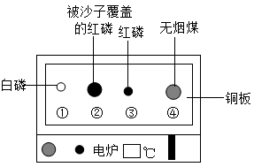
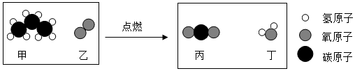
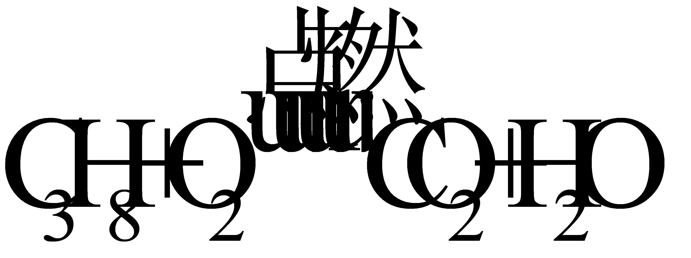
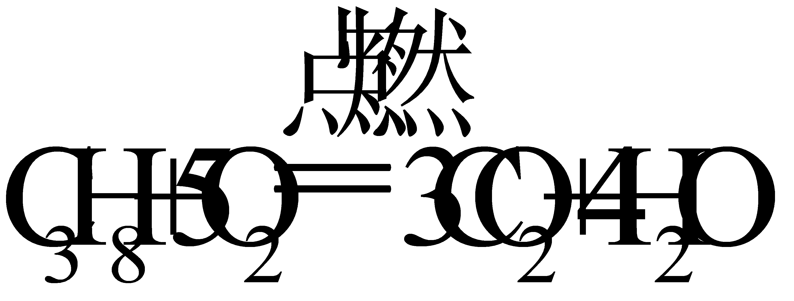
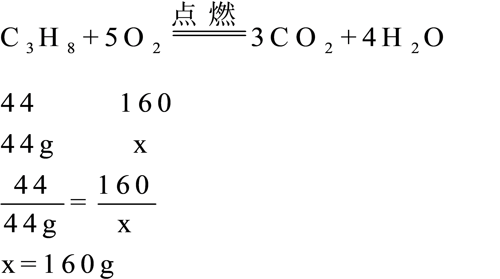

2019年北京市中考化学真题 · 选择题 第11、12题 · 对应解析
11. 用下图装置进行实验。升温至60℃的过程中，仅①燃烧；继续升温至260℃的过程中，仅③燃烧。下列分析不正确的是（ ）

A. ①燃烧，说明白磷是可燃物
B. 对比①③，可说明红磷的着火点比白磷的高
C. 对比②③，可验证燃烧需可燃物与氧气接触
D. ④未燃烧，说明无烟煤不是可燃物
【答案】D
【解析】
【详解】A、①燃烧，说明白磷是可燃物，故不符合题意；
B、由题干文字可得：升温至60℃的过程中，仅①燃烧；继续升温至260℃的过程中，仅③燃烧，说明红磷的着火点比白磷的高，故不符合题意；
C、升温至260℃的过程中，②中红磷被沙土覆盖，与氧气隔绝，不燃烧，③中红磷与空气中氧气接触，燃烧，对比②③，可验证燃烧需可燃物与氧气接触，故不符合题意；
D、④未燃烧，说明温度未达到无烟煤的着火点，故符合题意。
12. 丙烷（C3H8）是液化石油气的主要成分之一，燃烧前后分子种类变化的微观示意图如下。下列说法正确的是（ ）

A. 甲中碳、氢元素质量比为3:8B. 乙和丙的元素组成相同
C. 44g甲完全燃烧至少需160g乙D. 生成的丙与丁的分子个数比为1:1
【答案】C
【解析】
【分析】由图可知，该化学反应的一般表达式为：

，配平后的化学方程式为：
，依据化学方程式和题干中的信息，进行解答。【详解】A、由图可得，甲的化学式为C3H8，碳、氢元素质量比为12×3:1ⅹ8=9:2，故不符合题意；
B、由化学方程式可得，乙和丙的元素组成不相同，故不符合题意；
C、解：设44g甲完全燃烧至少需要乙的质量为x

故符合题意；
D、由化学方程式可得，生成的丙与丁的分子个数比为3:4，故不符合题意。
第二部分非选择题(共33分)每空1分。
【生活现象解释】